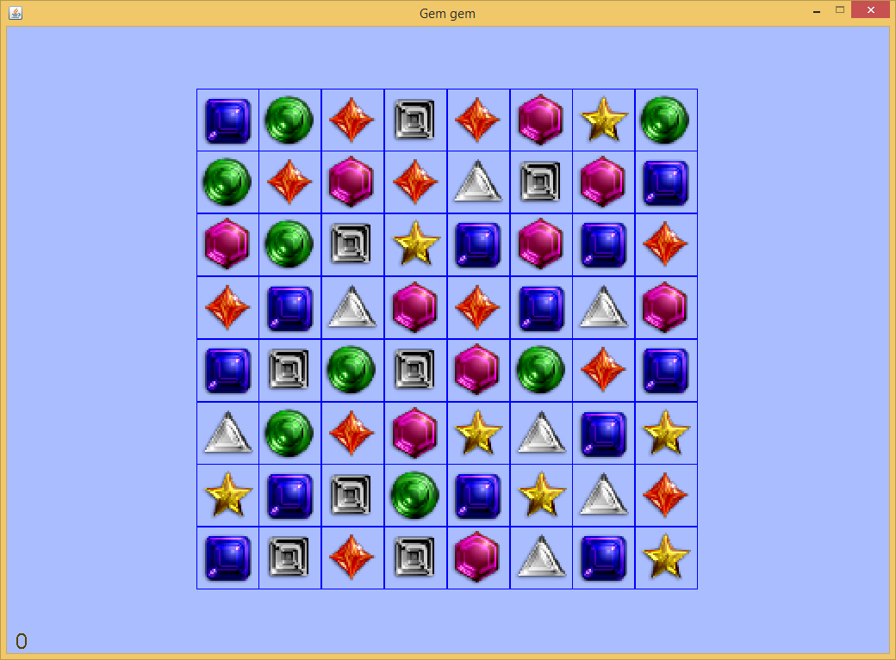

销宝石游戏在世界各地都很流行。这个游戏很简单，但是实现起来却不那么容易。困难在于如何显示宝石交换位置和销去后新的宝石落下来的动画。请注意，销宝石游戏板上包含64个宝石。重新绘制显示器上的所有宝石是一项计算量很大的任务。所以应该最大程度地减少直接在显示器上进行的绘画活动数量。所有静态元素都应在缓冲的图像中绘制，然后在屏幕更新事件中将缓冲的图像整个地画到屏幕上。
在代码中，名为init_Board_And_Animate的函数将生成此缓冲图像。此函数调用函数open_image_display生成图像显示句柄（也就是把图像当作一个窗口进行绘画的句柄）。与函数open_screen_display相似，返回的图像显示句柄可用于通过调用函数set_display_size和get_display_size来设置和返回图像的大小，用于通过调用calculate_text_origin来计算文本的位置，并且可以接受由绘画函数，例如draw_text和draw_oval，所触发的绘画事件。开发人员只需调用函数get_display_snapshot即可获取图像显示句柄的快照。然后，通过调用函数draw_image将返回的图像发布到屏幕上。该代码段如下所示。
// initialize the game board and animate all the gems dropping down
// 初始化游戏面板，并且模拟所有的宝石落下的过程
function init_Board_And_Animate(DISPLAYSURF, GEMIMAGES, BOARDRECTS, board, windowWidth, windowHeight, mvRate)
variable gemsImageDisplay = open_image_display(null)
set_display_size(gemsImageDisplay, windowWidth, windowHeight)
... ... // call painting functions to draw image display handle here, e.g. draw_image, draw_text and draw_point here. //在此处调用绘图函数在图像上绘制各种宝石
update_display(gemsImageDisplay)
variable gemsImage = get_display_snapshot(gemsImageDisplay, false, shrinkingRatio, shrinkingRatio)
... ...
draw_image("gemgem", DISPLAYSURF, gemsImage, 0, (windowHeight - progress)*shrinkingRatio, windowWidth*shrinkingRatio, windowHeight*shrinkingRatio, 0, 0, , windowWidth, progress)
MFP还提供了函数set_display_snapshot_as_bgrnd。此函数抓取图像显示句柄或者屏幕主窗口句柄的快照，并将该快照用作句柄自身的背景图像。使用这个函数的好处是，调用此函数一次，显示窗口的背景自动改变为当前窗口的样子。这种方法比调用draw_image函数更快，并且背景图像不受函数drop_old_painting_requests的影响。
当玩家移动宝石时，需要擦除移动或销去的宝石的网格单元。为此，需要在缓冲图像的显示句柄上调用函数clear_rect。由于只有一小部分宝石在移动，因此直接将它们绘制在屏幕上（也就是游戏主窗口上）。当宝石在新的单元格就位之后，将移动后的宝石重新绘制回到缓冲图像上，调用函数get_display_snapshot以获取缓冲的图像句柄的更新快照，然后调用函数set_display_snapshot_as_bgrnd将新的快照设置为缓冲的图像显示句柄的背景图像。
// first clear the two gems which will be swapped back from the background image of game's screen display
// 首先，把这两个要交换回来的宝石从游戏显示窗口的背景图案中抹掉
clear_rect("gemgem", gemsImageDisplay, [theX1, theY1], gemImgSize, gemImgSize)
clear_rect("gemgem", gemsImageDisplay, [theX2, theY2], gemImgSize, gemImgSize)
// update gemsImageDisplay and then take snapshot of this image display
// 更新图像“显示窗口”gemsImageDisplay，然后截取它的视图
update_display(gemsImageDisplay)
gemsImage = get_display_snapshot(gemsImageDisplay, false, shrinkingRatio, shrinkingRatio) //this is static gems image.
firstSwappingGem[infoNum] = gameBoard[x1][y1]
secondSwappingGem[infoNum] = gameBoard[x2][y2]
// animate the gem swapping.
// 模拟宝石换位的动画过程。
animate_Swapping_Gems(DISPLAYSURF, GEMIMAGES, BOARDRECTS, boardCopy, gemsImage, [firstSwappingGem, secondSwappingGem], [], score, _
gemImgSize, xMargin, yMargin, mvRate, up, down, left, right, rowAboveBoard)
// Swap the logic gems in the board data structure.
// 交换宝石在游戏面板数据结构中的逻辑位置
gameBoard[x1][y1] = secondSwappingGem[infoNum]
gameBoard[x2][y2] = firstSwappingGem[infoNum]
// send draw request for the swapped gems
// 为这两个交换位置的宝石发送绘制请求
draw_image("gemgem", gemsImageDisplay, GEMIMAGES[gameBoard[x1][y1]], theX1, theY1, scaledRatio, scaledRatio)
draw_image("gemgem", gemsImageDisplay, GEMIMAGES[gameBoard[x2][y2]], theX2, theY2, scaledRatio, scaledRatio)
// update gemsImageDisplay
// 更新图像“显示窗口”gemsImageDisplay
update_display(gemsImageDisplay)
... ...
set_display_snapshot_as_bgrnd(gemsImageDisplay, true, true)
示例代码及其辅助文件已包含在压缩包中。点击此处以下载压缩的游戏示例包。解压缩它，然后将game_examples文件夹复制到JMFPLang.jar文件旁边的scripts文件夹中，如下图所示。

该游戏的源代码脚本（即gemgem.mfps）位于game_examples文件夹的gemgem子文件夹中。它的辅助文件，即gem*.png，match*.wav和badstart.wav也位于同一文件夹中。要启动该示例，只需启动JMFPLang.jar文件，然后在命令行中运行gdi_test::game_test::gemgem::start_gemgem()。玩家还可以转到JMFPLang.jar所在的文件夹，然后通过键入java -jar JMFPLang.jar -f scripts\game_examples\gemgem\gemgem.mfps在Windows Command / Powershell或Linux bash中运行脚本。
借助MFP语言对Android和安装有JAVA的PC平台的双重支持，本游戏既可以在安装有JAVA的PC上运行，也可以在安卓设备上以应用或者独立脚本的方式运行。以下是该游戏在两个不同的平台上运行的截屏。上面的屏幕截屏是在Windows+JVM平台上的运行效果，下面的屏幕截屏是在Android平台上的运行效果。
